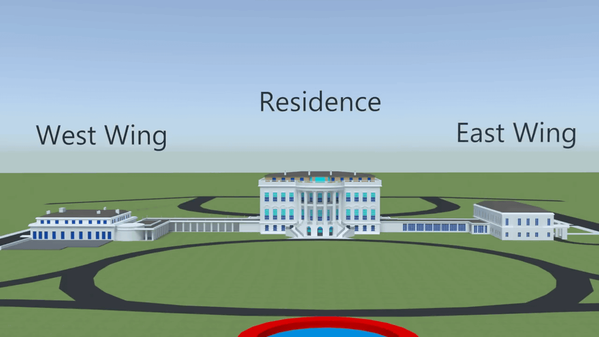
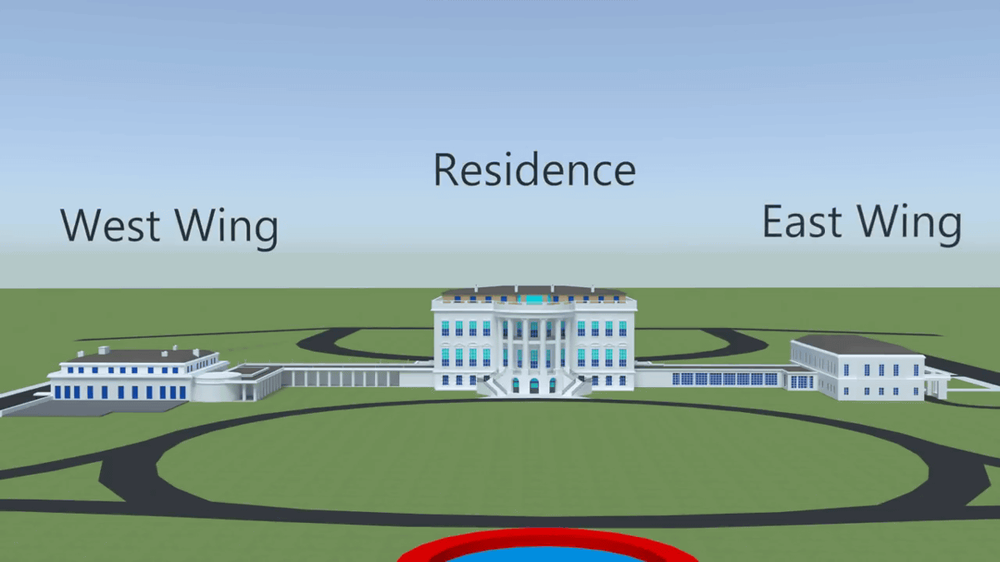

East Wing of the white house
The East Wing of the White House is a two-story structure that serves as office space for the First Lady and her staff, including the White House social secretary, White House Graphics and Calligraphy Office and correspondence staff. The East Wing also includes the visitors' entrance and the East Colonnade, a corridor connecting the body of the East Wing to the residence. Along the corridor is the White House theater, also called the Family theater. Social and touring visitors to the White House usually enter through the East Wing. The East Wing was built on top of the Presidential Emergency Operations Center, a secure emergency underground shelter for the President.
 

West Wing
Executive Branch Overview
Home